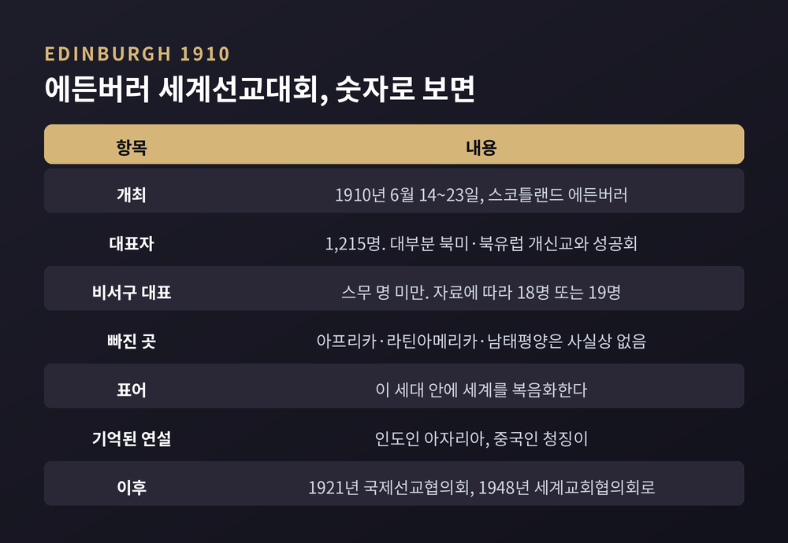
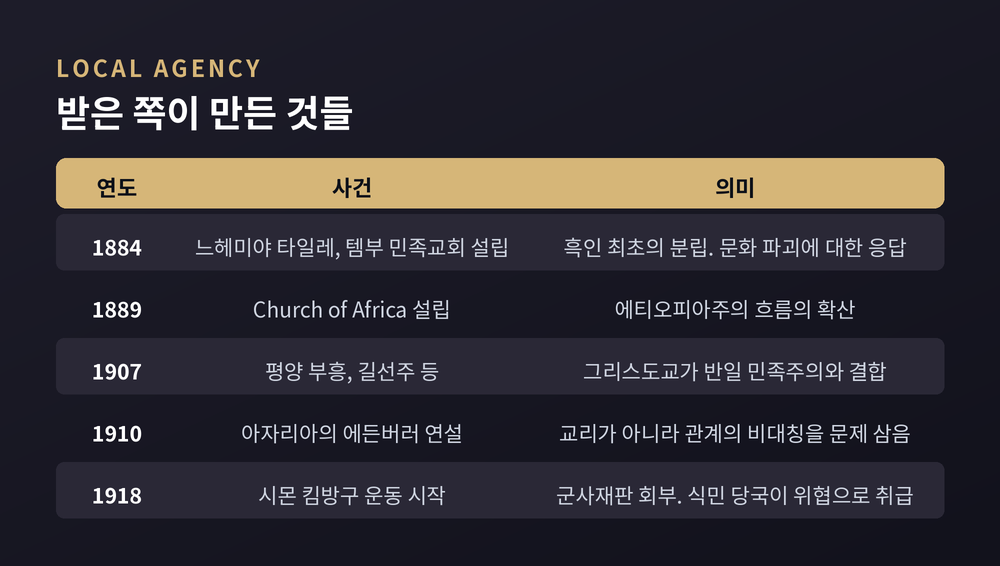
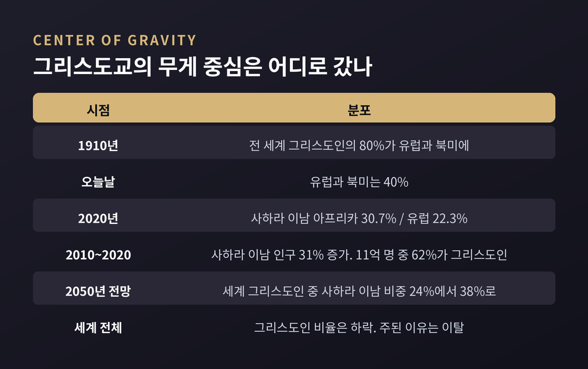

19세기 선교와 제국의 얽힘을 둘러싼 학계의 여러 독법
이번 글에서는 선교와 식민주의의 관계를 종교학이 어떻게 다시 읽어 왔는지 정리해 보겠습니다. 어느 종교가 옳았는지를 따지는 글이 아닙니다. 종교가 국경을 넘어 퍼질 때 무엇이 함께 움직였고, 학자들이 그 과정을 어떤 언어로 설명해 왔는지를 살펴보려는 글입니다.
먼저 세 줄로 요약하면 이렇습니다.
세 줄 요약
영국의 선교사학자 브라이언 스탠리는 한 가지를 짚었습니다. 서구 팽창에서 성경과 국기가 공생했다는 이야기가 이제 "일반 역사 지식의 의심할 수 없는 정설"이 되었다는 것입니다.
그 통념에는 근거가 있습니다. 스탠리 자신이 19세기 영국 제국 선교사들의 이념적 전제를 넷으로 정리했습니다. 이교 문화는 사탄의 지배 아래 있다는 것, 19세기 영국이 그리스도교 문화의 실용적 모델이라는 것, 인간의 진보는 바람직하다는 것, 그리고 '이교도를 문명화'하려는 시도가 성공적이었다는 자기확신입니다.
네 번째가 특히 무겁습니다. 성공했다는 확신은 방법을 되묻지 않게 만듭니다.
스탠리는 피지, 베추아날란드, 말라위, 우간다를 사례로 들여다봤습니다. 그의 결론은 단순하지 않습니다. 선교사들은 끝까지 복음적 구원에 헌신했지만, 1890년대에 이르면 그들의 반노예제 투쟁과 사회정의 헌신이 영국법을 관철시키는 일과 사실상 구분되지 않게 되었다는 것입니다.
동기는 종교적인데 결과는 제국적이었던 구간이 실재했다는 뜻입니다.
문명화 사명 담론이 제도로 모인 자리가 있습니다. 1910년 6월 14일부터 23일까지 스코틀랜드 에든버러에서 열린 세계선교대회입니다.
대표자는 1,215명이었습니다. 대부분 북미와 북유럽의 개신교·성공회 교단과 선교회에서 왔습니다. 동방정교회와 가톨릭 선교조직은 초청받지 못했습니다. 대회의 표어는 "이 세대 안에 세계를 복음화한다"였습니다.
비서구 대표는 스무 명이 채 되지 않았습니다. 자료에 따라 18명 또는 19명으로 갈리는데, 공통된 사실은 아프리카·라틴아메리카·남태평양 출신이 사실상 없었다는 점입니다.
그런데 지금까지 기억되는 두 연설은 그 소수에게서 나왔습니다. 인도인 V. S. 아자리아와 중국인 청징이입니다.
아자리아는 인도 남부 나다르 출신의 전도자였습니다. 에든버러에 가기 전에 이미 인도인이 전적으로 운영하는 선교회 두 곳을 만든 사람이었습니다. 그가 문제 삼은 것은 교리가 아니라 관계의 비대칭이었습니다. 현지 사역자가 선교사의 집 식사에 초대받지 못하는 일, 외국인이 인도인에게 직무와 특권을 넘기지 않는 일을 그는 잘못된 영성이라 불렀습니다.
그의 저녁 연설은 이렇게 끝났습니다.
"여러분은 가난한 이를 먹이려 재산을 내주셨습니다. 여러분은 몸을 불사르도록 내주셨습니다. 우리는 사랑도 청합니다. 우리에게 친구를 주십시오."
청징이는 대회에서 연설한 유일한 중국 대표였습니다. 그는 선교 조직의 지도권을 현지인에게 넘기라고 요구했고, 이후 존 모트가 꾸린 계속위원회 35인에 들어갑니다. 이 위원회는 1차 대전으로 중단되었지만 1921년 국제선교협의회, 나아가 1948년 세계교회협의회의 토대가 되었습니다.

선교를 식민 지배의 핵심 장치로 읽은 연구 중 가장 널리 인용되는 것은 장 코마로프와 존 코마로프의 『Of Revelation and Revolution』입니다. 1991년 시카고대 출판부에서 1권이 나왔습니다.
대상은 19세기 초 남부 츠와나 사람들과 비국교 개신교 선교사들입니다. 핵심 개념은 '의식의 식민화'입니다.
이들이 보기에 선교의 실제 작업은 교리 전달이 아니었습니다. 가장 기초적인 층위에서 사람을 바꾸는 일이었습니다. 선교사들이 가져온 변화는 츠와나의 농사 방식, 혼인, 기우제에까지 스며들었습니다. 무엇을 믿느냐가 아니라 어떻게 사느냐가 먼저 바뀌었다는 관찰입니다.
다만 코마로프 부부도 일방적 지배만 말하지는 않았습니다. 전도자들의 시도가 식민자와 피식민자 양쪽 모두에게 새로운 의식을 만들어냈고, 그 안에서 미묘한 형태의 행위성과 전유, 저항이 생겨났다고 봤습니다.
여기에도 반론이 붙습니다. 코마로프 부부가 츠와나의 행동을 '헤게모니적 의식에서 자기인식까지'라는 척도 위에 올려놓고 해석할 권한을 스스로 가져갔고, 그 과정에서 츠와나 자신의 의도적 발화를 일부 지워버렸다는 지적입니다.
탈식민 종교학의 가장 날카로운 지점은 여기입니다. 연구 대상이 아니라 연구 도구를 의심했다는 것.
데이비드 치데스터는 1996년 『Savage Systems』에서 '종교'와 '종교들'이라는 개념이 식민지 변경에서 만들어졌다고 주장했습니다. 유럽 여행자와 선교사, 정착민, 식민 행정관, 그리고 아프리카 현지인들이 서로의 삶의 방식을 비교한 그 접촉 과정이 곧 비교종교학의 출발점이었다는 것입니다. 그는 유럽인들이 아프리카 종교를 '야만적인 것'으로 구성한 역사를 추적하며, 비교종교 연구가 식민 권력과 깊이 얽혀 있었다고 썼습니다. 그가 강조한 것은 하나 더 있습니다. 그때 확립된 비교의 용어와 조건이 지금도 남아 있다는 점입니다.
토모코 마수자와는 2005년 『The Invention of World Religions』에서 한 걸음 더 나아갑니다. '세계종교'는 서술 개념이 아니라 하나의 분류 논리이자 지식의 형태라는 것입니다. 부제가 논지를 압축합니다. 유럽 보편주의가 어떻게 다원주의의 언어 속에서 보존되었는가.
마수자와는 언어와 인종의 새로운 분류가 불교와 이슬람에 특별한 지위를 부여했고, 두 종교가 각각 '아리아계'와 '셈계'라는 대립 항으로 이해되게 만들었다고 분석합니다. 그리고 '종교'라는 범주가 역사화되지 않은 채 본질화되어, 비판적 분석에 면역인 것처럼 전제되어 왔다고 지적합니다.
같은 논의가 인도학에서는 '힌두교는 식민지의 구성물인가' 논쟁으로 이어졌습니다. 여기서도 입장은 셋으로 갈립니다.
구성주의는 힌두교라는 단일 정체성이 낯선 세계에 행정적 질서를 부과하려던 영국 식민 기획의 산물이라고 봅니다. 반구성주의는 식민 이전 인도에 이미 해당하는 실체가 있었다고 반박합니다. 그리고 세 번째 강조점이 있습니다. 현지 엘리트들이 과거를 구성하는 능동적 행위자였다는 것입니다. 그들은 흘러드는 지식 가운데 자기 사회적·정치적 관심에 맞는 요소를 의식적으로 골라냈습니다.
'유럽이 만들고 인도가 받았다'는 구도 자체가 단순화라는 지적입니다.
정반대 방향에서 가장 강하게 반론을 편 학자는 라민 사네입니다. 감비아의 무슬림 가정에서 태어나 예일대에서 선교와 세계기독교를 가르친 사람입니다.
1989년 『Translating the Message』에서 그는 이렇게 말합니다. 그리스도교는 처음부터 창시자의 모어인 아람어와 히브리어에서 다른 언어로 메시지를 옮겨야 하는 필요 속에서 자기 정체성을 찾았다고.
여기서 사네의 핵심 주장이 나옵니다. 선교사들은 "온갖 동기를 가지고 나갔고 그중 일부는 건강하지 못했지만", 두드러지는 것은 성경을 토착어로 옮기는 데 쏟은 노력이었다는 것입니다. 그 결과 선교사들은 모어 화자들의 의도치 않은 동맹자이자 식민 지배의 마지못한 반대자가 되었다고 그는 표현합니다.
이유는 이렇습니다. 토착어로 성경을 옮기려면 그 언어의 문법을 정리하고 사전을 만들고 활자를 짜야 합니다. 그 작업물은 식민 통치가 끝난 뒤에도 남습니다. 사네가 "토착어 성경 번역은 식민 통치라는 덧없는 힘보다 멀리 가고 오래 남았다"고 쓴 배경입니다.
물론 반론도 만만치 않습니다. 후기식민 비평 쪽에서는 여러 식민 상황에서 성경 번역이 토착 문화와 언어, 사회에 해를 끼친 부정적 힘이었다고 봅니다. 번역은 사람들이 신들과 맺는 관계와 종교문화적 의미 체계 자체를 바꾸어 놓았다는 것입니다. 19세기 독일령 동아프리카의 성경 번역이 오히려 제국의 도달 범위를 넓혔다는 실증 연구도 나와 있습니다.
내부에서도 비판이 있습니다. 성경을 어떤 언어로 옮기는 일과 복음을 어떤 문화로 옮기는 일은 같지 않다는 지적입니다.
사네 본인도 개별 선교사들의 태도에 문제가 있었음을 부정하지 않았습니다. 그가 말한 것은 단순한 공모보다 층이 훨씬 많다는 쪽에 가깝습니다.
앤드루 월스와 그의 제자 콰메 베디아코가 남긴 관찰이 있습니다. 아프리카에서 그리스도교의 성장은 토착 종교가 약했던 곳이 아니라 강했던 곳에서 일어났다는 것입니다.
베디아코는 번역 가능성을 신학 방법론의 중심에 놓았습니다. 번역이 가능하기에 어떤 문화적 표현도 다른 것보다 우위에 서지 않는다는 논리입니다. 그래서 그는 회심을 자기 유산을 버리는 일이 아니라 존재 전체를 가지고 돌아서는 일로 이해했습니다.
실제 역사에서도 그렇습니다. 1880년대 남아프리카에서 에티오피아주의라 불리는 움직임이 시작됩니다. 근대 식민기 사하라 이남 아프리카인들의 가장 이른 종교적·정치적 자유의 흐름으로 꼽히는 운동입니다.
1884년, 느헤미야 타일레 목사가 감리교에서 분립해 템부 민족교회를 세웁니다. 흑인으로서는 최초였습니다. 이유는 분명했습니다. 백인 교회와 정부가 자기 아프리카 문화와 유산을 파괴하고 있다고 본 것입니다. 1889년에는 Church of Africa가 세워집니다. 아프리카 성직자들은 유럽 선교사의 감독과 선교 교회의 인종주의 정책을 거부하면서, 그리스도교 메시지를 아프리카의 유산에 맞게 다시 조정하려 했습니다.
이들이 즐겨 인용한 구절은 시편 68편 31절이었습니다. "에티오피아가 하나님을 향하여 그 손을 신속히 들리로다."
식민 당국은 이 흐름을 위협으로 취급했습니다. 벨기에령 콩고의 시몬 킴방구는 1918년 환상을 본 뒤 운동을 시작했다가 군사재판에 회부됩니다. 변론 기회 없이 태형을 받고 사형을 선고받았습니다. 국왕이 종신형으로 감형했을 뿐입니다.
한국의 사례도 이 대목에 놓입니다. 1907년 1월, 평양과 그 일대에서 개신교 부흥이 일어납니다. 최초의 한국인 장로교 목사 중 한 사람인 길선주가 중심에 있었습니다. 1904~1905년 러일전쟁이 한반도에서 벌어졌고, 그 전쟁은 조선이 일본 제국의 식민지가 되는 결과로 끝났습니다. 이 부흥은 곧 한국 민족주의, 반일 정서와 결합합니다.
예전에는 선교를 제국의 첨병으로만 놓고 보는 독법이 널리 쓰였습니다. 지금은 이런 사례들 앞에서 그 공식이 한 방향으로만 작동하지 않았다는 점이 함께 기록됩니다.

가장 선명한 반례는 콩고에서 나옵니다.
1904년 E. D. 모렐과 로저 케이스먼트가 콩고개혁협회를 만듭니다. 레오폴 2세 치하 콩고자유국의 착취를 폭로하기 위한 조직이었습니다.
여기에 콩고 발롤로 선교회 소속 선교사 앨리스 실리 해리스가 합류합니다. 1904년부터 1908년 사이, 그녀가 찍은 사진은 레오폴의 식민지에서 벌어진 일을 유럽과 북미 여론에 알린 활동의 핵심이었습니다.
방식이 흥미롭습니다. 해리스 부부는 환등기 순회 강연을 제안했습니다. 영국과 미국에서 복음전도에 쓰이던 선교 순회 강연의 형식을 그대로 가져와, 사진을 슬라이드로 상영한 것입니다. 남편 존 해리스의 기록에 따르면 49개 도시에서 200회의 집회가 열렸습니다.
전도의 도구가 고발의 도구로 전용된 셈입니다.
반대 방향의 무게추도 분명히 있습니다.
캐나다 진실화해위원회는 2015년, 인디언 기숙학교 제도가 원주민에 대한 '문화적 학살'에 해당한다고 결론지었습니다. 1874년부터 1996년까지 약 15만 명의 원주민 아동이 가족과 문화, 정체성에서 분리되었고, 신체적·성적 학대를 겪었습니다. 학교에 있는 동안 사망한 아동은 약 6,000명으로 추정됩니다. 위원회는 94개 실행 권고를 내놓았습니다.
2023년 3월 30일에는 바티칸이 움직였습니다. 문화교육부와 온전한인간발전부가 공동성명을 내고, 원주민의 고유한 인권을 인정하지 않는 개념들, 곧 '발견 교리'로 알려진 법적·정치적 교리를 공식적으로 배격한다고 밝혔습니다. 관련 교황 칙서들이 "원주민의 동등한 존엄과 권리를 적절히 반영하지 못했다"는 문장도 함께 들어갔습니다. 원주민 단체들이 수년간 요구해 온 결과입니다.
종교학의 과제는 이 둘을 같은 지면에 올려두는 일입니다. 콩고의 환등기와 캐나다의 기숙학교는 둘 다 사실입니다.
숫자를 보면 또 다른 층이 드러납니다.
앤드루 월스가 짚은 대비가 유명합니다. 1910년에는 전 세계 그리스도인의 80%가 유럽과 북미에 있었습니다. 오늘날은 40%입니다.
퓨리서치센터의 2025년 집계는 더 구체적입니다. 2020년 기준 전 세계 그리스도인의 30.7%가 사하라 이남 아프리카에, 22.3%가 유럽에 삽니다. 사하라 이남 아프리카는 2010~2020년 사이 인구가 31% 늘어 11억 명이 되었고, 그중 62%가 그리스도인으로 자기를 규정합니다. 같은 기간 전 세계 그리스도인 증가분의 대부분을 이 지역이 차지했습니다.
2015년 퓨의 장기 전망도 같은 방향입니다. 사하라 이남 아프리카에 사는 세계 그리스도인의 비중은 2010년 24%에서 2050년 38%로 오를 것으로 봅니다. 인구로는 5억 1,700만 명에서 11억 명입니다.
원인은 신앙적이기만 한 것이 아닙니다. 아프리카의 높은 출산율에 따른 자연증가와 서유럽의 광범위한 탈종교화가 함께 작용했습니다. 전 세계 그리스도인 비율 자체는 오히려 하락했는데, 주된 이유는 신앙을 떠나는 사람들입니다.
그렇다면 선교가 근대 제도를 남겼는가. 여기서 학계는 갈립니다.
로버트 우드베리는 2012년 『미국정치학회보』에 실은 논문에서 '회심지향 개신교'가 종교 자유, 대중 교육, 대량 인쇄, 신문, 자발적 결사체, 식민지 개혁의 촉매였다고 주장했습니다. 역사적 개신교 선교사 밀도가 아프리카·아시아·라틴아메리카·오세아니아의 민주주의 편차 중 절반가량을 설명한다는 계량 결과였습니다. 이 논문은 약 400회 인용되었고 여섯 개의 학술상을 받았습니다.
반박도 정면으로 나왔습니다. 엘레나 니콜로바와 야쿠프 폴란스키는 26개의 대안적 민주주의 측정치를 쓰고 평균 기간을 늘려 재현을 시도했습니다. 결과는 달랐습니다. 개신교 선교와 민주주의 사이에 유의한 관계가 나타나지 않았습니다. 이들은 우드베리의 역사 서술은 방대하고 철저하지만 동반된 실증 증거는 심각한 비일관성을 안고 있다고 평가했습니다.
아직 합의는 없습니다. 이 글에서도 어느 한쪽 손을 들지 않겠습니다.

마지막으로 시야를 조금 넓혀 보겠습니다. 19세기 서구 선교만이 종교 전파의 유일한 형태는 아니었습니다.
불교는 인도에서 해상 무역을 따라 동남아시아로, 실크로드를 따라 동아시아로 퍼졌습니다. 상인과 승려가 교역로에서 공존했다는 서술이 일반적입니다.
이슬람은 인도양과 사하라 횡단, 실크로드 교역망의 상인 공동체를 통해 확산했습니다. 특히 수피 선교사들이 현지 문화에 맞게 조정하면서 토착 전통과 섞인 실천을 만들어냈고, 이것이 아프리카·남아시아·동남아시아에서의 빠른 확산에 결정적이었다고 봅니다. 물론 7~8세기 아랍의 군사 정복이 중동과 북아프리카, 이베리아 일부를 무슬림 정치 지배 아래 놓았다는 사실도 함께 기록됩니다.
실크로드를 따라 중앙아시아와 페르시아, 당대 중국까지 이른 네스토리우스파 그리스도교 선교는 상대적으로 소규모였습니다.
전파의 방식은 종교마다, 시대마다 다릅니다. 교역과 혼인, 이주, 정복, 제도, 번역이 서로 다른 비율로 섞입니다. 19세기 서구 선교를 종교 전파의 표준형으로 놓으면 오히려 보이지 않는 것이 많아집니다.
정리하면 이렇습니다.
선교와 제국은 같은 시간과 같은 공간을 공유했습니다. 서로를 이용했고, 서로에게 이용당했습니다. 공모를 강조하는 연구와 복잡성을 강조하는 연구는 지금도 같은 학술지 안에서 맞서고 있습니다. 어느 쪽도 상대를 완전히 밀어내지 못했습니다.
그래서 종교학이 도달한 자리는 판결이 아니라 질문의 정교화에 가깝습니다. 누가 무엇을 들여왔는가보다, 받은 쪽이 그것으로 무엇을 만들었는가를 묻는 방향입니다.
이 글에도 한계가 있습니다. 여기 옮긴 것은 주로 영어권 학계의 논쟁이고, 다뤄야 할 지역과 전통은 훨씬 넓습니다.
다만 한 가지는 남습니다 — 역사는 준 쪽의 기록만으로는 쓰이지 않습니다.
1884년 남아프리카에서 교회를 세운 사람도, 1910년 에든버러에서 친구를 달라고 말한 사람도, 결국 자기 몫의 문장을 남겼습니다. 그 문장들을 함께 읽을 때에야 이 역사가 겨우 입체가 됩니다.